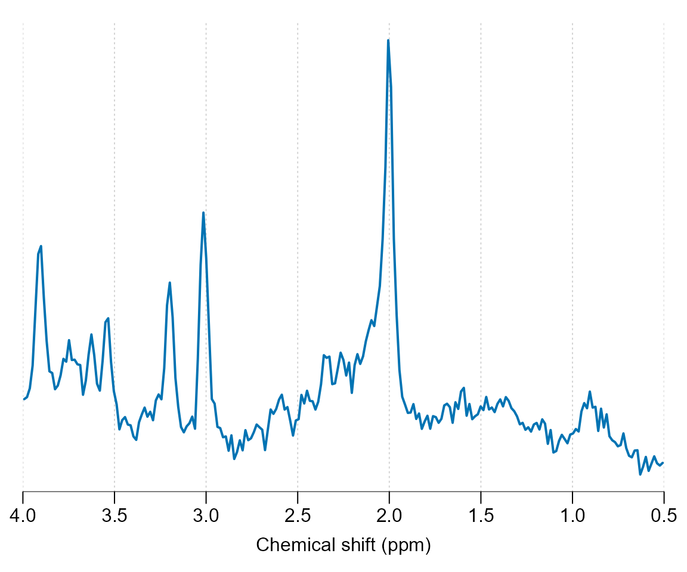
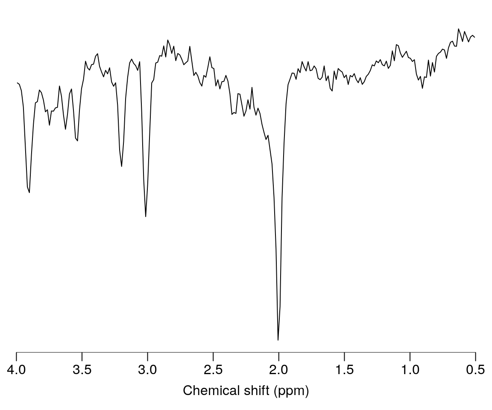
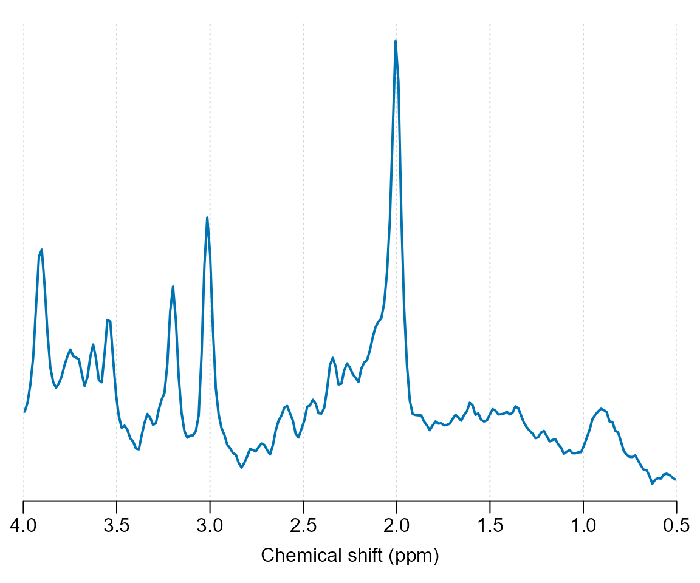
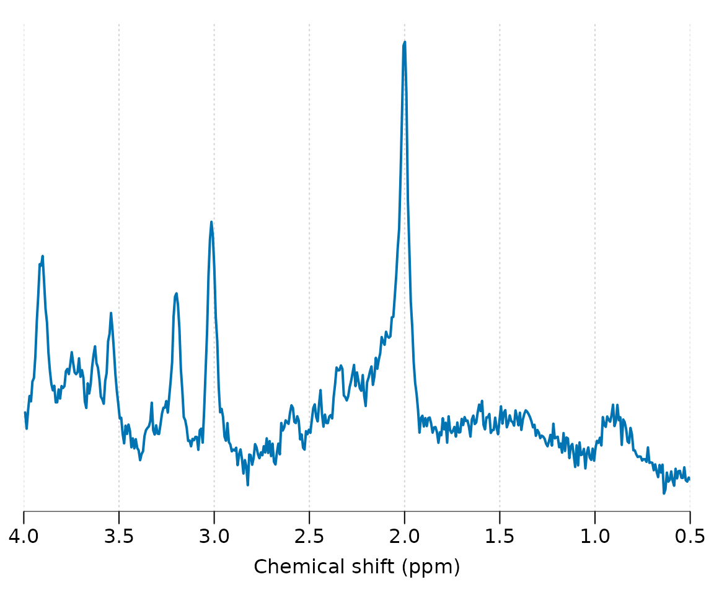
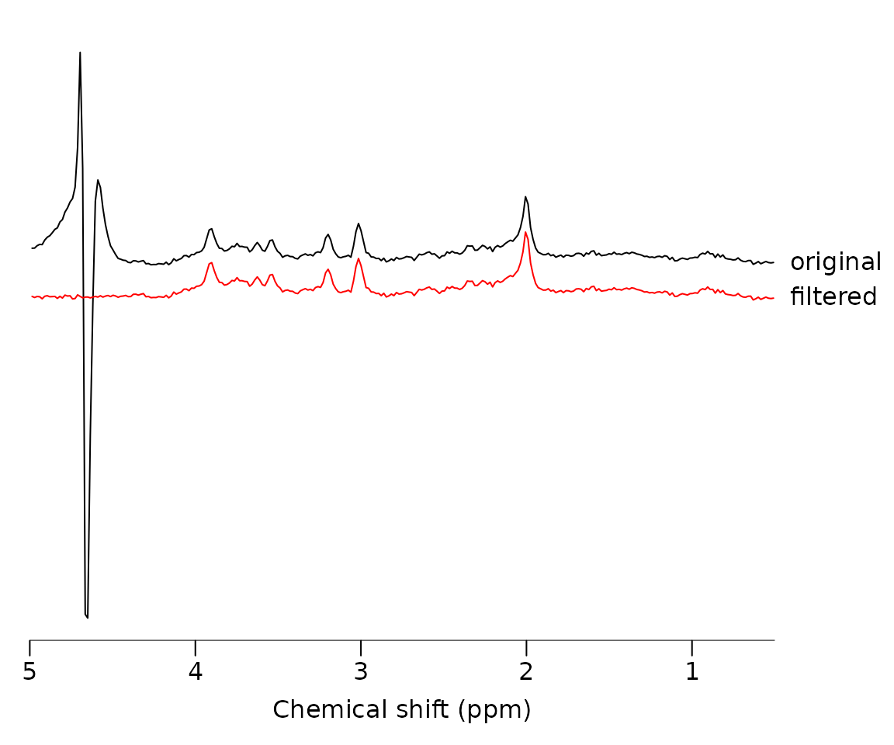
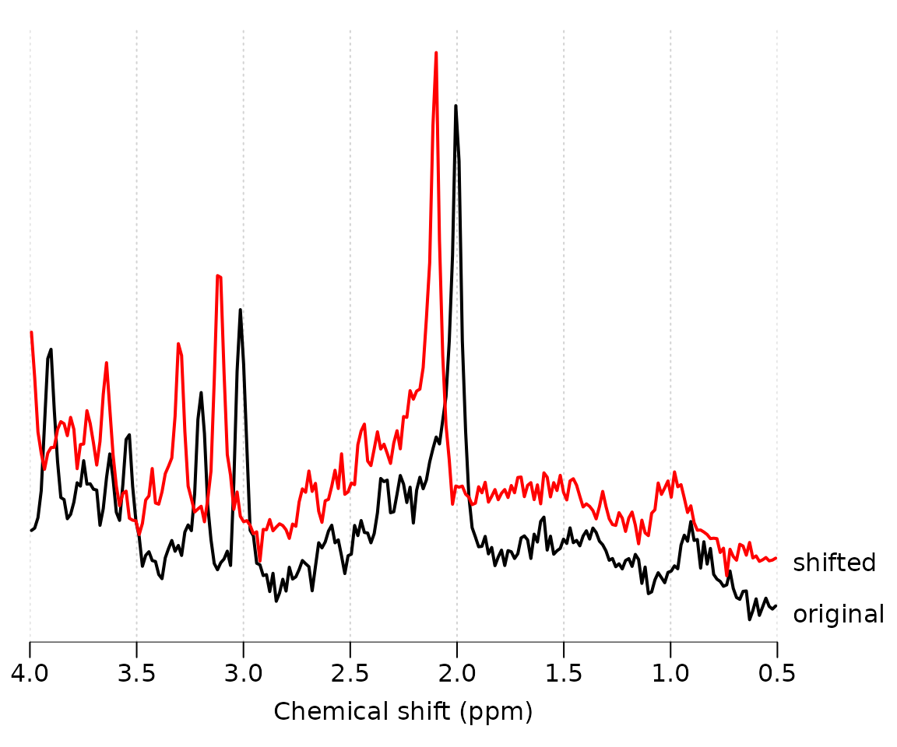
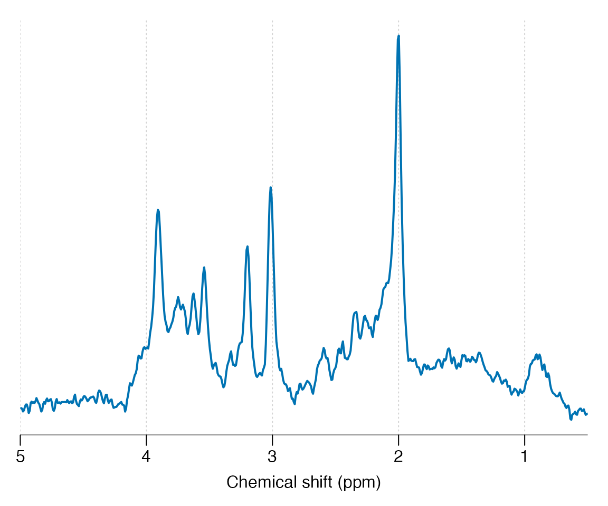

Load the spant package:
Load some example data for preprocessing:
fname <- system.file("extdata", "philips_spar_sdat_WS.SDAT", package = "spant")
mrs_data <- read_mrs(fname, format = "spar_sdat")Plot the spectral region between 4 and 0.5 ppm:

Apply a 180 degree phase adjustment and plot:

Apply 3 Hz Guassian line broadening:

Zero fill the data to twice the original length and plot:

Apply a HSVD filter to the residual water region and plot together with the original data:
mrs_data_filt <- hsvd_filt(mrs_data)
stackplot(list(mrs_data, mrs_data_filt), xlim = c(5, 0.5), y_offset = 10,
col = c("black", "red"), labels = c("original", "filtered"))
Apply a 0.1 ppm frequency shift and plot together with the original data:
mrs_data_shift <- shift(mrs_data, 0.1, "ppm")
stackplot(list(mrs_data, mrs_data_shift), xlim = c(4, 0.5), y_offset = 10,
col = c("black", "red"), labels = c("original", "shifted"))
Multiple processing commands may be conveniently combined with the pipe operator “|>” :
